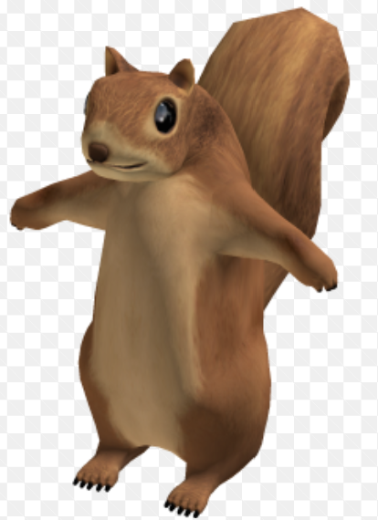
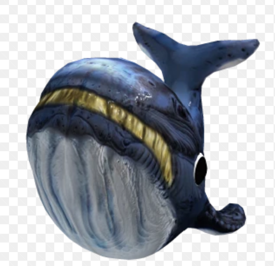
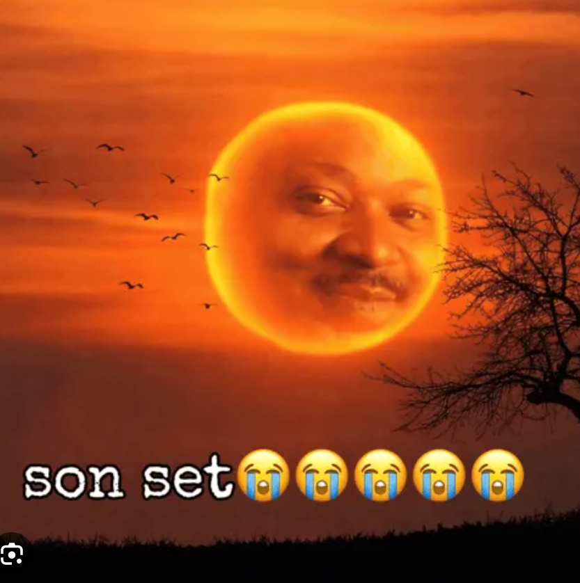
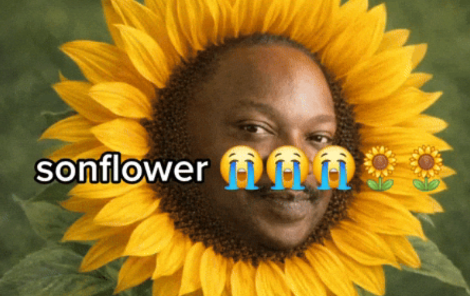
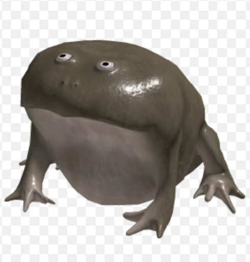

PROJECT 01coming
soon.Your first gaming website could live here.
soon.Your first gaming website could live here.
I’m Lucas — a student developer who enjoys turning code, game ideas, and curious experiments into websites people want to explore.
↘I’m curious about how code can turn a good idea into an experience.




I’m Lucas Wu, a computer science student interested in software development, gaming, and creative technology. I work with Python, HMMS, CCS, and JavaScript, and I have already created some games while building my problem-solving and debugging skills. I’m a decent coder who enjoys learning through hands-on projects and hopes to create websites, games, and digital experiences that people enjoy using. My interests include game development, web development, and creative coding.

Send me an email ↗